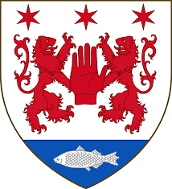

1538286085 Grain O'Neill

Barn med
1538286084 Duina MacDuibhn (990? - >1020)
Barn:
Paul O'Dwibhne MacDuibhn (1015 - 1066)
Personhistoria
Årtal
Ålder
Händelse
990?
Partnern
1538286084 Duina MacDuibhn
föds omkring 990 Dumbartonshire,Scotland
[1]
1015
Sonen
769143042 Paul O'Dwibhne MacDuibhn
föds 1015
[1]
>1020
Partnern
1538286084 Duina MacDuibhn
dör efter 1020 Lochow, Argyllshire, Scotland
[2]
1050?
Barnbarnet
384571521 Aoife (Eva) MacDuibhn
föds omkring 1050 Scotland
[1]
1066
Sonen
769143042 Paul O'Dwibhne MacDuibhn
dör 1066
[1]
Källor
[1]
Wikitree
[2]
Wikipedia